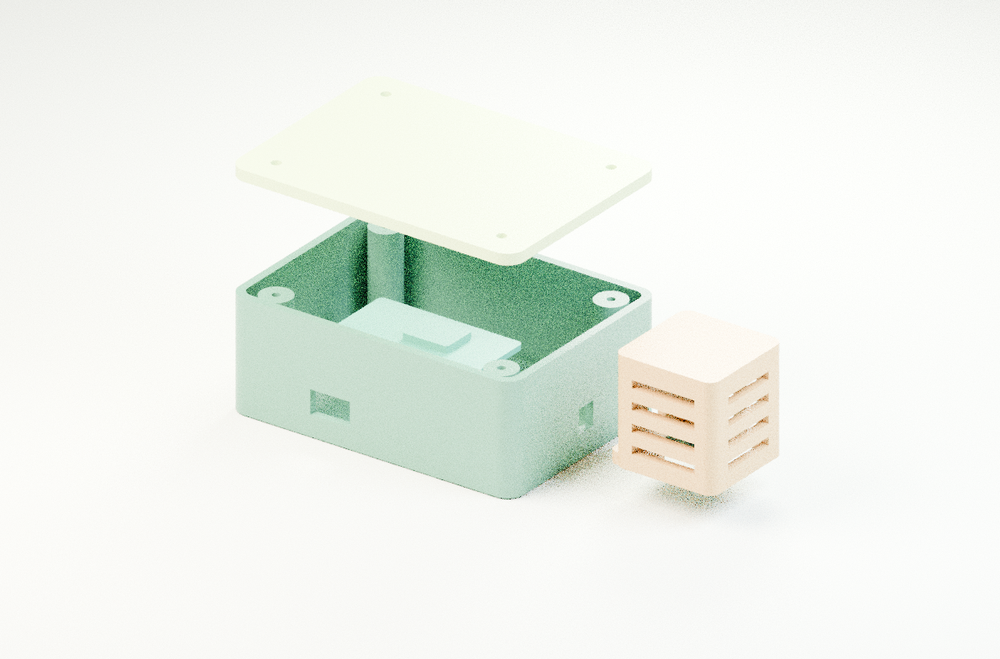
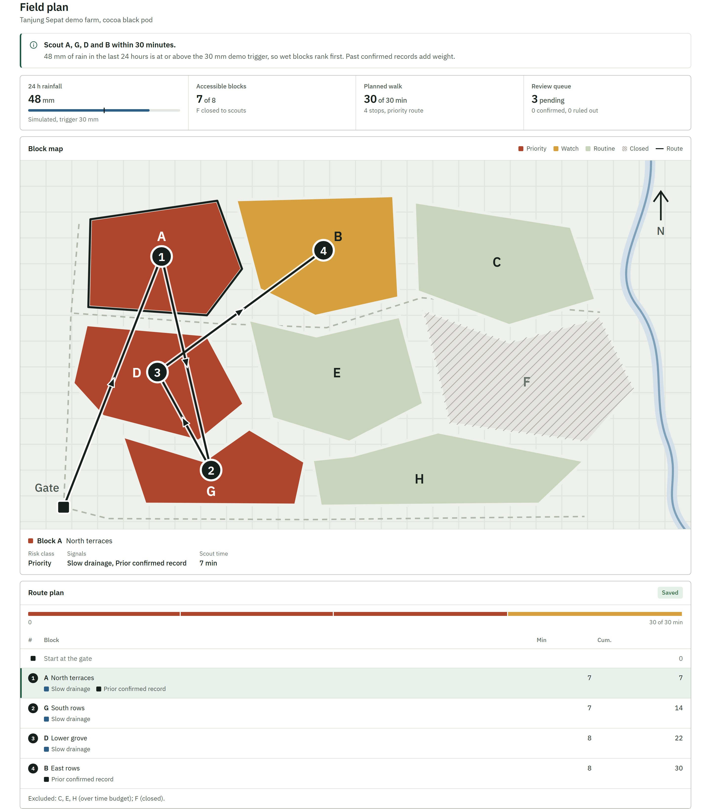
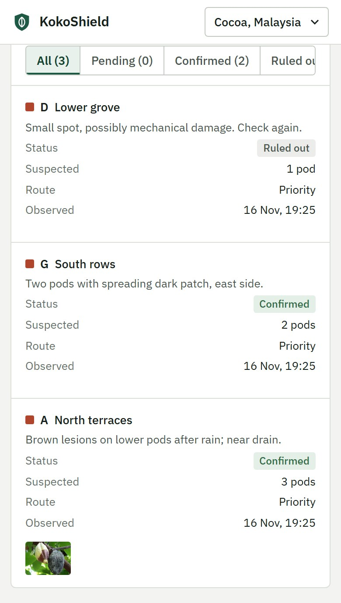

<!doctype html>
<html lang="en">
<head>
<meta charset="utf-8">
<title>KokoShield Pitch v4</title>
<link href="https://fonts.googleapis.com/css2?family=Noto+Sans:wght@400;600;700;800&display=swap" rel="stylesheet">
<style>
:root{--g:#2B654F;--ink:#13201a;--red:#B0452E;--amb:#D6A03E;--rou:#C8D4BC}
html,body{margin:0;background:#0c1411;overflow:hidden;font-family:'Noto Sans','Segoe UI',sans-serif}
#stage{position:relative;width:1920px;height:1080px;overflow:hidden;background:#0c1411}
.shot,.ov{position:absolute;opacity:0;display:none;will-change:transform,opacity}
.shot{inset:0;transform-origin:50% 50%}
.shot img{position:absolute;inset:0;width:100%;height:100%;object-fit:cover}
#rain,#vig,#flash{position:absolute;inset:0;pointer-events:none}
#vig{background:radial-gradient(ellipse at 50% 45%,rgba(0,0,0,0) 52%,rgba(0,0,0,.5) 100%)}
#flash{background:#eef6ff;opacity:0}
.glass{background:rgba(10,26,20,.82);color:#fff;border-radius:22px;padding:26px 34px;box-shadow:0 20px 50px rgba(0,0,0,.3)}
.card{background:rgba(255,255,255,.97);color:var(--ink);border-radius:22px;padding:26px 30px;box-shadow:0 20px 50px rgba(8,30,20,.25)}
.kick{font-size:21px;font-weight:800;letter-spacing:.14em;text-transform:uppercase;color:#9fe0bf;margin-bottom:10px}
.card .kick{color:var(--g)}
.h1{font-size:58px;font-weight:800;line-height:1.08}
.h2{font-size:40px;font-weight:800;line-height:1.12}
.big{font-size:96px;font-weight:800;line-height:1;color:var(--g);font-variant-numeric:tabular-nums}
.lbl{font-size:24px;line-height:1.35;color:#33403a}
.glass .lbl{color:#d6e9df}
.chip{display:inline-flex;align-items:center;gap:10px;border-radius:999px;padding:8px 18px;font-weight:700;font-size:22px}
.w{display:inline-block;will-change:transform,opacity}
#brand{left:44px;top:34px;display:flex;align-items:center;gap:14px;background:rgba(255,255,255,.93);border-radius:999px;padding:10px 22px 10px 14px;font-weight:800;font-size:24px;color:var(--g)}
#brand small{font-weight:600;color:#56645d;font-size:18px}
#chap{right:44px;top:38px;background:rgba(10,26,20,.75);color:#fff;border-radius:999px;padding:10px 22px;font-size:19px;font-weight:700;letter-spacing:.04em}
#credit{right:46px;top:92px;max-width:390px;text-align:right;color:rgba(255,255,255,.92);font-size:16px;font-weight:600;text-shadow:0 1px 3px rgba(0,0,0,.8);display:block;opacity:1}
#cap{left:50%;bottom:44px;transform:translateX(-50%);max-width:1500px;background:rgba(6,14,10,.74);color:#fff;font-size:33px;line-height:1.35;font-weight:600;padding:14px 30px;border-radius:16px;text-align:center}
#prog{left:0;bottom:0;height:8px;background:#9fe0bf;display:block;opacity:1}
#cap,#brand,#chap,#credit,#prog{z-index:20}
#wipe{position:absolute;top:-220px;left:0;width:2600px;height:1520px;background:linear-gradient(90deg,#123527 0%,#2B654F 38%,#2B654F 62%,#123527 100%);display:none;align-items:center;justify-content:center;z-index:30}
#wipe svg{transform:skewX(16deg)}
.pin{position:absolute;width:0;height:0}
.pin .dot{position:absolute;left:-13px;top:-13px;width:26px;height:26px;border-radius:50%;border:4px solid #fff;box-shadow:0 0 0 4px rgba(0,0,0,.25)}
.pin .lab{position:absolute;white-space:nowrap;font-size:27px;font-weight:800;color:#fff;padding:10px 18px;border-radius:12px;box-shadow:0 10px 24px rgba(0,0,0,.35)}
.phone{width:360px;height:740px;border-radius:52px;background:#0f1412;padding:14px;box-shadow:0 30px 60px rgba(0,0,0,.45)}
.phone .scr{position:relative;width:100%;height:100%;border-radius:40px;overflow:hidden;background:#fff}
.phone img{position:absolute;left:0;top:0;width:100%}
.laptop{width:1320px;height:870px;transform:scale(.88);transform-origin:0 0}
.laptop .bezel{position:absolute;left:0;top:0;width:1320px;height:840px;background:#121615;border-radius:26px;box-shadow:0 30px 70px rgba(0,0,0,.5)}
.laptop .screen{position:absolute;left:20px;top:20px;width:1280px;height:800px;overflow:hidden;border-radius:8px;background:#fff}
.laptop .base{position:absolute;left:-70px;top:834px;width:1460px;height:24px;background:linear-gradient(#d3d8d6,#8c9390);border-radius:0 0 26px 26px}
.zoom{position:absolute;left:0;top:0;width:1280px;height:800px;transform-origin:0 0}
.zoom img{position:absolute;left:0;top:0;width:1280px;height:800px}
.cursor{position:absolute;left:0;top:0;width:34px;height:42px;z-index:5}
.ripple{position:absolute;left:-30px;top:-30px;width:60px;height:60px;border-radius:50%;border:5px solid #2B654F;opacity:0}
.badge{position:absolute;font:800 13px 'Noto Sans','Segoe UI',sans-serif;border-radius:6px;padding:3px 8px;min-width:52px;text-align:center;opacity:0}
.tablet{position:absolute;background:#121615;border-radius:34px;padding:20px;box-shadow:0 30px 70px rgba(0,0,0,.5)}
.row{display:flex;align-items:center;gap:18px;margin:0 0 14px}
.num{flex:none;width:44px;height:44px;border-radius:50%;background:#2B654F;color:#fff;font-weight:800;font-size:22px;display:flex;align-items:center;justify-content:center}
.dot{display:inline-block;width:20px;height:20px;border-radius:50%;margin:5px}
.stat{width:430px}
.paper{background:#fff;padding:16px;border-radius:6px;box-shadow:0 24px 50px rgba(0,0,0,.45)}
</style>
<script src="data_v4.js"></script>
</head>
<body>
<div id="stage">
 <div id="bg"></div>
 <canvas id="rain" width="1920" height="1080"></canvas>
 <div id="flash"></div>
 <div id="vig"></div>
 <div id="ovl"></div>
 <div id="wipe"><svg width="150" height="168" viewBox="0 0 34 38" aria-hidden="true"><path d="M17 2 31 7v11c0 9-6 15-14 18C9 33 3 27 3 18V7z" fill="#fff"/><path d="M17 11c-4 3-6 7-5 12 4 0 7-3 8-7 1 4 0 8-3 11" stroke="#2B654F" stroke-width="2.4" fill="none" stroke-linecap="round"/></svg></div>
</div>
<script>
const K = window.KS4, S = K.starts, END = S[S.length - 1], CAPS = K.caps, NAMES = K.names, CRED = K.credits;
const clamp = (x, a = 0, b = 1) => Math.min(b, Math.max(a, x));
const sm = x => { x = clamp(x); return x * x * (3 - 2 * x); };
const ramp = (t, a, b) => sm((t - a) / (b - a));
const eo = x => 1 - Math.pow(1 - clamp(x), 3), ei = x => clamp(x) * clamp(x);
const bo = x => { x = clamp(x); const c1 = 1.70158, c3 = c1 + 1; return 1 + c3 * Math.pow(x - 1, 3) + c1 * Math.pow(x - 1, 2); };
const lerp = (a, b, k) => a + (b - a) * k;
const at = (i, x) => S[i] + x;
let seed = 3; const rnd = () => { seed |= 0; seed = seed + 0x6D2B79F5 | 0; let q = Math.imul(seed ^ seed >>> 15, 1 | seed); q = q + Math.imul(q ^ q >>> 7, 61 | q) ^ q; return ((q ^ q >>> 14) >>> 0) / 4294967296; };
const $ = s => document.querySelector(s);
const vis = (t, a, b, fin = 0.55, fout = 0.4) => Math.min(eo((t - a) / fin), 1 - ei((t - b + fout) / fout));
const PH = '../photos/';

/* ---------------- photo shots (Ken Burns + grade) ---------------- */
const SHOTS = [];
function shot(file, t0, t1, from, to, grade = '', pos = '50% 50%', extra = '') {
  const el = document.createElement('div'); el.className = 'shot';
  el.innerHTML = `${extra}`; $('#bg').appendChild(el);
  SHOTS.push({ el, file, t0, t1, from, to, credit: CRED[file] || '' });
}
const pin = (x, y, text, col, dx, dy, side = 'right') => `<div class="pin" style="left:${x}px;top:${y}px"><div class="dot" style="background:${col}"></div><div class="lab" style="background:${col};${side === 'right' ? 'left' : 'right'}:${dx}px;top:${dy}px">${text}</div></div>`;
/* 1 hook */
shot('18_rain.jpg', -0.2, at(0, 3.9), [1.10, 0, 0], [1.24, -2, 1], 'saturate(.65) brightness(.68) contrast(1.12)');
shot('02_hook_close.jpg', at(0, 3.3), at(0, 7.1), [1.06, 2, 0], [1.2, -1, -2], 'saturate(.8) brightness(.74) contrast(1.08)');
shot('13_black_pod.jpg', at(0, 6.5), S[1] + 0.45, [1.0, 0, 0], [1.16, -5, -4], 'saturate(.95) brightness(.88)', '50% 43%',
  `<div class="hb">${pin(691, 386, 'Healthy pod', '#2f9a6a', 34, -70)}${pin(1306, 694, 'Black pod', '#B0452E', 34, -74)}</div>`);
/* 2 climate risk */
shot('11_black_pod.jpg', S[1] - 0.2, at(1, 6.9), [1.04, 0, 0], [1.16, 2, -2], 'brightness(.78) saturate(.9)');
shot('17_market.jpg', at(1, 6.4), at(1, 13.0), [1.04, 0, 0], [1.14, -2, 0], 'brightness(.8)');
shot('14_farmer.jpg', at(1, 12.5), S[2] + 0.4, [1.03, 0, 0], [1.14, -2, 1], 'brightness(.82)');
/* 3 market gap */
shot('16_farmer.jpg', S[2] - 0.2, S[3] + 0.4, [1.05, 0, 0], [1.12, 2, 0], 'brightness(.55) blur(3px)');
/* 4 drone (photo, then map and node scenes) */
shot('20_drone.jpg', S[3] - 0.2, at(3, 2.7), [1.04, 0, 0], [1.16, 3, 2], 'brightness(.88) saturate(1.05)', '50% 50%',
  `<div class="hb">${pin(595, 367, 'Camera drone', '#2B654F', 34, -74)}</div>`);
shot('06_farm.jpg', at(3, 7.6), S[4] + 0.3, [1.08, 0, 0], [1.14, 0, 0], 'brightness(.35) blur(6px) saturate(.8)');
/* 5 ranked route: blurred farm behind the laptop */
shot('02_hook_close.jpg', S[4] - 0.2, S[5] + 0.3, [1.15, 0, 0], [1.22, 0, 0], 'brightness(.35) blur(8px)');
/* 6 record and confirm */
shot('12_black_pod.jpg', S[5] - 0.2, at(5, 3.4), [1.0, 0, 0], [1.12, -2, 0], 'brightness(.85)', '50% 40%');
shot('19_rain.jpg', at(5, 3.0), S[6] + 0.3, [1.1, 0, 0], [1.16, 0, 0], 'brightness(.35) blur(8px)');
/* 7 pilot: dark farm behind the map */
shot('06_farm.jpg', S[6] - 0.2, S[7] + 0.3, [1.1, 0, 0], [1.16, 0, 0], 'brightness(.3) blur(8px)');
/* 8 impact and market */
shot('01_hook_close.jpg', S[7] - 0.2, at(7, 5.8), [1.04, 0, 0], [1.14, -2, 0], 'brightness(.62)');
shot('15_farmer.jpg', at(7, 5.3), at(7, 10.9), [1.04, 0, 0], [1.12, 0, -2], 'brightness(.66)');
shot('10_pods.jpg', at(7, 10.4), S[8] + 0.4, [1.04, 0, 0], [1.12, 2, 0], 'brightness(.62)');
/* 9 close */
shot('02_hook_close.jpg', S[8] - 0.2, END + 1, [1.2, -2, -1], [1.04, 0, 0], 'sepia(.22) saturate(1.15) brightness(.8) contrast(1.05)');

/* ---------------- overlay system (cards, scenes) ---------------- */
const OV = [];
function ov(html, css, tin, tout, fx = 'up', cls = '', credit = '') {
  const el = document.createElement('div'); el.className = 'ov ' + cls; el.style.cssText = css; el.innerHTML = html; $('#ovl').appendChild(el);
  const o = { el, tin, tout, fx, credit }; OV.push(o); return o;
}
const brand = ov('<svg width="34" height="38" viewBox="0 0 34 38"><path d="M17 2 31 7v11c0 9-6 15-14 18C9 33 3 27 3 18V7z" fill="#2B654F"/><path d="M17 11c-4 3-6 7-5 12 4 0 7-3 8-7 1 4 0 8-3 11" stroke="#9fe0bf" stroke-width="2.4" fill="none" stroke-linecap="round"/></svg><span>KokoShield <small>Weather-guided disease scouting</small></span>', '', 0.2, END - 2.2, 'fade');
brand.el.id = 'brand'; brand.el.dataset.d = 'flex';
const chap = ov('', '', 0.4, END - 2.4, 'fade'); chap.el.id = 'chap';
const cap = ov('', '', 0, END - 2.3, 'none'); cap.el.id = 'cap';
const credEl = document.createElement('div'); credEl.className = 'ov'; credEl.id = 'credit'; $('#ovl').appendChild(credEl);
const prog = document.createElement('div'); prog.className = 'ov'; prog.id = 'prog'; $('#ovl').appendChild(prog);

/* ---------- app-style block map (exact geometry from the Field Desk prototype) ---------- */
const POLY = { A: '68,57 191,39 215,105 181,150 66,142', B: '209,38 362,34 367,133 286,151 232,125', C: '382,40 534,64 558,135 474,160 385,127',
  D: '64,159 181,169 217,236 173,272 80,248 51,216', E: '221,154 287,170 368,151 391,236 319,273 244,250', F: '390,145 474,176 562,152 595,221 550,273 416,255',
  G: '99,267 178,291 222,260 276,292 267,334 121,333', H: '283,290 322,286 405,263 547,291 503,333 291,335' };
const LBL = { A: [137, 73], B: [308, 73], C: [462, 98], D: [113, 205], E: [307, 205], F: [491, 214], G: [185, 320], H: [387, 308] };
const PRI = { A: '#B0452E', D: '#B0452E', G: '#B0452E', B: '#D6A03E', C: '#C8D4BC', E: '#C8D4BC', H: '#C8D4BC', F: 'url(#mclosed)' };
function mapSVG(id, mode, extra = '') {
  let grid = ''; for (let x = 25; x < 650; x += 25) grid += `M${x} 0V357`; for (let y = 25; y < 357; y += 25) grid += `M0 ${y}H650`;
  const blocks = Object.keys(POLY).map(k => {
    const fill = mode === 'priority' ? PRI[k] : (k === 'F' ? 'url(#mclosed)' : '#C8D4BC');
    const dark = mode === 'priority' && ['A', 'D', 'G'].includes(k);
    return `<polygon id="${id}-${k}" points="${POLY[k]}" fill="${fill}" stroke="#EEF0EB" stroke-width="3" stroke-linejoin="round"/>
      <text id="${id}-l${k}" x="${LBL[k][0]}" y="${LBL[k][1]}" text-anchor="middle" dominant-baseline="central" font-size="17" font-weight="800" fill="${dark ? '#fff' : (k === 'F' ? '#67716B' : '#17201C')}" style="paint-order:stroke" stroke="${dark ? '#B0452E' : '#EEF0EB'}" stroke-width="4">${k}</text>`; }).join('');
  return `<svg viewBox="0 0 650 357" style="display:block;width:100%;height:100%;font-family:'Noto Sans','Segoe UI',sans-serif">
  <defs><pattern id="mclosed" width="6" height="6" patternUnits="userSpaceOnUse" patternTransform="rotate(45)"><rect width="6" height="6" fill="#E3E4E0"/><path d="M0 0v6" stroke="#A9A69F" stroke-width="1.3"/></pattern>
  ${Object.keys(POLY).map(k => `<clipPath id="${id}-c${k}"><polygon points="${POLY[k]}"/></clipPath>`).join('')}</defs>
  <rect width="650" height="357" fill="#EEF0EB"/><path d="${grid}" stroke="#17201C" stroke-opacity=".05" stroke-width="1"/>
  <path d="M610 -8C617 56 565 99 597 141S611 230 627 271 617 326 648 362" stroke="#D3E0EA" stroke-width="10" fill="none"/>
  <path d="M611 -8C617 56 566 99 598 141S611 230 627 271 617 326 648 362" stroke="#7FA0B9" stroke-width="2" fill="none"/>
  <path d="M42 336L46 250 49 151 57 61M42 336L85 347 281 348 547 345M52 148L190 158 297 162 389 133 562 147" fill="none" stroke="#AFB6AA" stroke-width="1.4" stroke-dasharray="5 4"/>
  ${blocks}
  <rect x="36" y="330" width="12" height="12" rx="2" fill="#17201C" stroke="#fff" stroke-width="1.5"/><text x="14" y="321" font-size="12" fill="#56645d" font-weight="700">Gate</text>
  <path d="M621 58L621 30M614 40L621 30 628 40" fill="none" stroke="#17201C" stroke-width="1.6"/><text x="617" y="72" font-size="12" fill="#56645d" font-weight="700">N</text>
  ${extra}</svg>`;
}
const DRONE = `<g class="drone"><ellipse cx="6" cy="9" rx="17" ry="7" fill="#000" opacity=".18"/>
  <path d="M-11 -11L11 11M11 -11L-11 11" stroke="#17201C" stroke-width="3.2" stroke-linecap="round"/>
  ${[[-11, -11], [11, -11], [-11, 11], [11, 11]].map(([x, y]) => `<g transform="translate(${x} ${y})"><circle r="7.5" fill="rgba(255,255,255,.55)" stroke="#17201C" stroke-width="1.2"/><path class="blade" d="M-7 0H7" stroke="#17201C" stroke-width="1.6"/></g>`).join('')}
  <rect x="-5" y="-5" width="10" height="10" rx="2.5" fill="#2B654F" stroke="#fff" stroke-width="1.2"/></g>`;

/* ================= SCENE 1: hook ================= */
ov(`<div class="kick">GSC 2026–27 · Food Resilience</div><div class="h1">After heavy rain,<br>a cocoa grower has</div>
<div style="display:flex;align-items:center;gap:22px;margin-top:14px"><svg width="96" height="96" viewBox="0 0 100 100"><circle cx="50" cy="50" r="44" fill="none" stroke="rgba(255,255,255,.25)" stroke-width="10"/><circle id="clk1" cx="50" cy="50" r="44" fill="none" stroke="#9fe0bf" stroke-width="10" stroke-dasharray="276.5" stroke-dashoffset="276.5" transform="rotate(-90 50 50)" stroke-linecap="round"/></svg><span style="font-size:84px;font-weight:800;color:#9fe0bf">30 minutes.</span></div>
<div id="which" class="h2" data-at="3.9" style="margin-top:18px;opacity:0">Which blocks first?</div>`, 'left:70px;top:190px;width:820px', 0.4, at(0, 6.6), 'left', 'glass');
ov(`<div class="kick">24 h rainfall</div><div style="display:flex;align-items:baseline;gap:10px"><span id="mm" class="big" style="color:#2f8fd8">0</span><span style="font-size:36px;font-weight:800;color:#2f8fd8">mm</span></div>
<div style="position:relative;height:16px;background:#e3ecef;border-radius:9px;margin:16px 0 10px;width:360px"><div id="mmbar" style="height:100%;width:0;background:#2f8fd8;border-radius:9px"></div><div style="position:absolute;left:180px;top:-8px;width:4px;height:32px;background:#B5462E"></div></div>
<div id="trigtxt" class="lbl">Trigger: 30 mm</div>`, 'right:60px;top:150px;width:430px', 1.0, at(0, 6.6), 'right', 'card');

/* ================= SCENE 2: climate risk ================= */
ov(`<div class="kick">The problem</div><div class="h2">Rain splash spreads black pod<br>from pod to pod</div>`, 'left:70px;top:130px;width:760px', at(1, 0.3), at(1, 6.6), 'left', 'glass');
ov(`<div class="big" id="st1">0%</div><div class="lbl">of global cocoa production lost to black pod each year <span style="color:#7a8781">(Guest 2007)</span></div>`, 'left:70px;top:640px', at(1, 1.6), at(1, 6.6), 'up', 'card stat');
ov(`<div style="display:flex;gap:10px;margin-bottom:12px"><span class="chip" id="c1" style="background:#e9f2ed;color:#2B654F">Ghana</span><span class="chip" id="c2" style="background:#e9f2ed;color:#2B654F">Ecuador</span><span class="chip" id="c3" style="background:#e9f2ed;color:#2B654F">Indonesia</span></div><div class="lbl">Heavy rain linked to lower cocoa yield in 3 producing countries <span style="color:#7a8781">(PNAS 2026)</span></div>`, 'left:70px;top:640px', at(1, 6.9), at(1, 12.7), 'up', 'card stat');
ov(`<div style="display:flex;align-items:center;gap:22px"><svg width="120" height="120" viewBox="0 0 100 100"><circle cx="50" cy="50" r="40" fill="none" stroke="#e3ecef" stroke-width="16"/><circle id="donut" cx="50" cy="50" r="40" fill="none" stroke="#2B654F" stroke-width="16" stroke-dasharray="251.3" stroke-dashoffset="251.3" transform="rotate(-90 50 50)"/></svg><div class="big" id="st3">0%</div></div><div class="lbl" style="margin-top:8px">of Malaysian cocoa area is smallholdings <span style="color:#7a8781">(MCB 2025)</span></div>`, 'left:70px;top:620px', at(1, 13.1), S[2] - 0.3, 'up', 'card stat');

/* ================= SCENE 3: market gap ================= */
const dots = [['Weather forecast models', 1.6, 8.0, 2.0], ['Plantix photo diagnosis', 6.6, 1.6, 2.7], ['Spreadsheet records', 4.0, 3.2, 3.4], ['Usual round + paper log', 3.2, 1.3, 4.1], ['PlantwisePlus factsheets', 1.4, 2.4, 4.8]];
const X = x => 70 + x * 78, Y = y => 560 - y * 50;
ov(`<div class="kick">What is missing</div><div class="h2" style="font-size:36px;margin-bottom:14px">Tools diagnose, forecast or record.<br>None turns rain into a scouting route.</div>
<svg width="900" height="600" viewBox="0 0 900 600" style="font-family:'Noto Sans','Segoe UI',sans-serif">
<rect id="quad" x="460" y="60" width="390" height="250" fill="#2B654F" opacity="0"/>
<line id="ax1" x1="70" y1="560" x2="860" y2="560" stroke="#14201b" stroke-width="3" stroke-dasharray="790" stroke-dashoffset="790"/>
<line id="ax2" x1="70" y1="560" x2="70" y2="50" stroke="#14201b" stroke-width="3" stroke-dasharray="510" stroke-dashoffset="510"/>
<line x1="460" y1="60" x2="460" y2="560" stroke="#c9d5cf" stroke-width="2" stroke-dasharray="8 8"/><line x1="70" y1="310" x2="860" y2="310" stroke="#c9d5cf" stroke-width="2" stroke-dasharray="8 8"/>
<text x="465" y="594" font-size="21" fill="#56645d" text-anchor="middle">Field-action specificity →</text><text x="84" y="44" font-size="21" fill="#56645d">↑ Weather / climate trigger</text>
<text id="qlab" x="840" y="95" font-size="22" font-weight="800" fill="#2B654F" text-anchor="end" opacity="0">Weather-triggered field action</text>
${dots.map((d, i) => `<g id="d${i}" opacity="0"><circle cx="${X(d[1])}" cy="${Y(d[2])}" r="15" fill="#8CAE9E"/><text x="${X(d[1]) + 24}" y="${Y(d[2]) + 7}" font-size="22" fill="#14201b">${d[0]}</text></g>`).join('')}
<g id="ks" opacity="0"><circle id="ksring" cx="${X(8.6)}" cy="${Y(8.2)}" r="28" fill="none" stroke="#2B654F" stroke-width="4"/><circle cx="${X(8.6)}" cy="${Y(8.2)}" r="22" fill="#2B654F"/><text x="${X(8.6)}" y="${Y(8.2) + 56}" font-size="28" font-weight="800" fill="#2B654F" text-anchor="middle">KokoShield</text></g>
</svg>`, 'right:60px;top:110px;width:960px', S[2] + 0.3, S[3] - 0.3, 'right', 'card');

/* ================= SCENE 4: drone survey + Field Node ================= */
ov(`<div class="kick">New · Drone survey (concept)</div><div class="h2" style="font-size:36px">A borrowed university camera drone<br>maps the farm's blocks</div>`, 'right:60px;top:150px;width:780px', at(3, 0.3), at(3, 2.6), 'right', 'glass');
const LAWN = []; for (let r = 0; r < 6; r++) { const y = 42 + r * 55; LAWN.push(r % 2 ? [610, y] : [40, y], r % 2 ? [40, y] : [610, y]); }
const lawnLen = LAWN.slice(1).reduce((a, p, i) => a + Math.hypot(p[0] - LAWN[i][0], p[1] - LAWN[i][1]), 0);
function along(pts, f) { let L = 0; const segs = pts.slice(1).map((p, i) => { const l = Math.hypot(p[0] - pts[i][0], p[1] - pts[i][1]); L += l; return l; }); let d = clamp(f) * L;
  for (let i = 0; i < segs.length; i++) { if (d <= segs[i]) { const k = segs[i] ? d / segs[i] : 0; return [lerp(pts[i][0], pts[i + 1][0], k), lerp(pts[i][1], pts[i + 1][1], k), Math.atan2(pts[i + 1][1] - pts[i][1], pts[i + 1][0] - pts[i][0])]; } d -= segs[i]; }
  const p = pts[pts.length - 1]; return [p[0], p[1], 0]; }
const WATER = { A: [[118, 104, 34, 18], [160, 70, 20, 12]], D: [[118, 222, 40, 20], [158, 245, 18, 10]], G: [[150, 312, 36, 14], [222, 302, 22, 10]] };
const waterSVG = Object.entries(WATER).map(([k, blobs]) => `<g id="w${k}" clip-path="url(#dm-c${k})" opacity="0">${blobs.map(([x, y, rx, ry]) => `<ellipse cx="${x}" cy="${y}" rx="${rx}" ry="${ry}" fill="#3d8fd4" opacity=".62"/>`).join('')}
  ${blobs.slice(0, 1).map(([x, y]) => `<circle class="rip" cx="${x}" cy="${y}" r="6" fill="none" stroke="#bfe0ff" stroke-width="2"/>`).join('')}</g>`).join('');
const OUT_SVG = Object.keys(POLY).map(k => `<polygon class="outl" id="o${k}" points="${POLY[k]}" fill="none" stroke="#17201C" stroke-width="2.2" stroke-linejoin="round" opacity="0"/>`).join('');
const dm = ov(`<div class="tablet" style="left:310px;top:100px;width:1300px;height:714px"><div style="position:relative;width:1300px;height:714px;border-radius:14px;overflow:hidden">
  ${mapSVG('dm', 'neutral', `<polyline id="lawn" points="${LAWN.map(p => p.join(',')).join(' ')}" fill="none" stroke="#2B654F" stroke-width="2" stroke-dasharray="${lawnLen}" stroke-dashoffset="${lawnLen}" opacity=".7"/>${OUT_SVG}${waterSVG}<g id="drone" transform="translate(40 42)">${DRONE}</g>`)}
  <div id="dmchip" style="position:absolute;left:24px;top:22px" class="chip"></div></div></div>`, 'left:0;top:0;width:1920px;height:1080px', at(3, 2.3), at(3, 8.0), 'fade', '', 'Drone survey concept · KokoShield app map of the demo farm');
const wchips = ['A', 'D', 'G'].map(k => ov(`<span class="chip" style="background:#1f6fb8;color:#fff;font-size:20px">Standing water · ${k}</span>`, '', at(3, 5.6), at(3, 8.0), 'up'));
/* map px placement helper for dm: svg spans 1420x780 at (270,116), viewBox 650x357 */
const dmPx = (x, y) => [330 + x * 1300 / 650, 120 + y * 714 / 357];
['A', 'D', 'G'].forEach((k, i) => { const p = dmPx(...WATER[k][0]); wchips[i].el.style.left = (p[0] - 90) + 'px'; wchips[i].el.style.top = (p[1] - 86) + 'px'; });
ov(`<div style="display:flex;gap:46px;align-items:center">
  <div class="card" style="position:relative;width:980px;padding:20px">
   <svg style="position:absolute;left:20px;top:20px" width="940" height="620" viewBox="0 0 940 620">
    ${[[0.55, 0.25, 760, 70, 'Lid'], [0.73, 0.58, 925, 470, 'Ventilated hood: air temp + humidity'], [0.36, 0.64, 30, 600, '86 × 62 × 32 mm enclosure'], [0.49, 0.52, 30, 70, 'ESP32-class controller (size envelope)']]
      .map(([fx, fy, lx, ly, txt], i) => `<g class="callout" id="cl${i}" opacity="0"><line x1="${fx * 940}" y1="${fy * 620}" x2="${lx + (lx > 470 ? 0 : 0)}" y2="${ly}" stroke="#2B654F" stroke-width="3"/><circle cx="${fx * 940}" cy="${fy * 620}" r="8" fill="#2B654F" stroke="#fff" stroke-width="3"/>
      <text x="${lx}" y="${ly - 10}" font-size="24" font-weight="800" fill="#17201C" text-anchor="${lx > 470 ? 'end' : 'start'}" style="paint-order:stroke" stroke="#fff" stroke-width="6">${txt}</text></g>`).join('')}
   </svg></div>
  <div style="width:560px;display:flex;flex-direction:column;gap:22px">
   <div class="glass"><div class="kick">Optional · Field Node</div><div class="h2" style="font-size:34px">Local sensor box, our CAD concept</div><div class="lbl" style="margin-top:8px">Not yet built or field-tested. Rainfall still comes from a gauge.</div></div>
   <div class="card"><div class="kick">Rain gauge</div><div style="display:flex;align-items:baseline;gap:10px"><span class="big" style="font-size:80px;color:#2f8fd8">48</span><span style="font-size:32px;font-weight:800;color:#2f8fd8">mm / 24 h</span></div><div class="lbl" style="margin-top:6px"><b style="color:#B5462E">Above the 30 mm trigger</b> → plan a round</div></div>
  </div></div>`, 'left:70px;top:170px', at(3, 7.7), S[4] - 0.3, 'up', '', 'KokoShield Field Node CAD render (concept)');

/* ================= SCENE 5: ranked route on the real app ================= */
function laptop(id, imgs, credit, tin, tout, extra = '') {
  return ov(`<div class="laptop" style="position:relative"><div class="bezel"></div><div class="base"></div><div class="screen"><div class="zoom" id="${id}z">
   ${imgs.map((im, i) => ``).join('')}${extra}
   <div class="cursor" id="${id}cur"><svg width="34" height="42" viewBox="0 0 34 42"><path d="M3 2v32l9-8 6 14 6-3-6-13h12z" fill="#fff" stroke="#111" stroke-width="2.4" stroke-linejoin="round"/></svg><div class="ripple" id="${id}rip"></div></div>
  </div></div></div>`, 'left:300px;top:74px', tin, tout, 'up', '', credit);
}
const CSS = 1280 / 1440;   /* app CSS px -> laptop screen px */
laptop('lp1', ['app_plan_routine.png', 'app_plan_route.png'], 'KokoShield Field Desk prototype (demo data)', S[4] + 0.2, at(4, 7.3));
const chipBefore = ov(`<span class="chip" style="background:#ffffff;color:#17201C;font-size:23px;box-shadow:0 8px 20px rgba(0,0,0,.3)">Before rain · 9 mm · routine order B → A → C → G</span>`, 'left:560px;top:22px', at(4, 0.6), at(4, 2.9), 'up');
const chipAfter = ov(`<span class="chip" style="background:#B0452E;color:#fff;font-size:23px;box-shadow:0 8px 20px rgba(0,0,0,.3)">After 48 mm · wet blocks first: A → G → D → B</span>`, 'left:560px;top:22px', at(4, 3.1), at(4, 7.3), 'up');
ov(`<div style="display:flex;gap:60px;align-items:center">
  <div class="paper" style="transform:rotate(-3deg);width:600px"></div>
  <div class="phone"><div class="scr"></div></div>
  <div class="glass" style="width:520px"><div class="kick">KokoShield Field Desk</div><div class="h2" style="font-size:38px">Ranked route that fits 30 minutes</div><div class="lbl" style="margin-top:10px">A reason beside every stop. Works on a phone or a printed checklist.</div></div></div>`,
  'left:90px;top:150px', at(4, 7.0), S[5] - 0.3, 'up', '', 'KokoShield Field Desk prototype (demo data)');

/* ================= SCENE 6: record and confirm ================= */
ov(`<div class="phone"><div class="scr"></div></div>`, 'right:120px;top:150px', at(5, 0.4), at(5, 3.4), 'right');
ov(`<div class="glass"><div class="kick">Scout log</div><div class="h2" style="font-size:38px">Each suspected pod: note + photo</div></div>`, 'left:70px;top:150px;width:720px', at(5, 0.3), at(5, 3.3), 'left');
const BADGES = [[810, 394, 'Confirmed', 4.6], [810, 328, 'Confirmed', 5.6], [810, 262, 'Ruled out', 6.6]];
laptop('lp2', ['app_log_pending.png', 'app_log_reviewed.png'], 'KokoShield Field Desk prototype (demo data)', at(5, 3.0), S[6] - 0.2,
  BADGES.map(([x, y, txt], i) => `<div class="badge" id="bdg${i}" style="left:${(x - 4) * CSS}px;top:${(y - 11) * CSS}px;background:${txt === 'Confirmed' ? '#dcefe3' : '#e6e8e7'};color:${txt === 'Confirmed' ? '#1f6b46' : '#56645d'}">${txt}</div>`).join('') +
  `<div id="confring" style="position:absolute;left:${1134 * CSS}px;top:${150 * CSS}px;width:${120 * CSS}px;height:${44 * CSS}px;border:4px solid #2B654F;border-radius:12px;opacity:0"></div>`);
ov(`<span class="chip" style="background:#2B654F;color:#fff;font-size:23px;box-shadow:0 8px 20px rgba(0,0,0,.3)">Only confirmed pods count toward the result</span>`, 'left:560px;top:22px', at(5, 7.4), S[6] - 0.3, 'up');

/* ================= SCENE 7: pilot race on the app map ================= */
const WP = { gate: [42, 336], A: [137, 93], G: [185, 300], D: [133, 205], B: [294, 87], C: [462, 98], E: [307, 205] };
const PLAN_R = [['A', 7, 3], ['G', 7, 2], ['D', 8, 1], ['B', 8, 1]], PLAN_U = [['B', 8, 1], ['C', 7, 0], ['E', 8, 0], ['G', 7, 1]];
function walk2(plan, min) {
  let t0 = 0, prev = WP.gate, finds = 0, first = null, tr = 0, total = 0; const segs = []; { let p = WP.gate; for (const [k] of plan) { const l = Math.hypot(WP[k][0] - p[0], WP[k][1] - p[1]); segs.push(l); total += l; p = WP[k]; } }
  for (let i = 0; i < plan.length; i++) { const [k, m, f] = plan[i], c = WP[k], tw = m * 0.35;
    if (min < t0 + m) { const u = min - t0; if (u < tw) { const a = sm(u / tw); return { pos: [lerp(prev[0], c[0], a), lerp(prev[1], c[1], a)], finds, first, trail: (tr + segs[i] * a) / total }; }
      const ph = (u - tw) / (m - tw) * Math.PI * 2; return { pos: [c[0] + Math.sin(ph) * 14, c[1] + Math.cos(ph) * 9 - 9], finds, first, trail: (tr + segs[i]) / total }; }
    t0 += m; finds += f; if (f && first === null) first = t0; tr += segs[i]; prev = c; }
  return { pos: prev, finds, first, trail: 1 };
}
const routePts = plan => [WP.gate, ...plan.map(p => WP[p[0]])];
const plen = pts => pts.slice(1).reduce((a, p, i) => a + Math.hypot(p[0] - pts[i][0], p[1] - pts[i][1]), 0);
const LR = plen(routePts(PLAN_R)), LU = plen(routePts(PLAN_U));
const raceT0 = at(6, 1.4), raceT1 = at(6, 11.4), raceMin = t => 30 * ramp(t, raceT0, raceT1);
const finishAt = plan => { let a = 0; return plan.map(([k, m, f]) => { a += m; return [k, a, f]; }); };
const scoutSVG = (id, col, label) => `<g id="${id}"><circle class="halo" r="16" fill="${col}" opacity=".25"/><circle r="10" fill="${col}" stroke="#fff" stroke-width="3"/><text x="16" y="-14" font-size="13" font-weight="800" fill="${col}" style="paint-order:stroke" stroke="#fff" stroke-width="4">${label}</text></g>`;
const bursts = finishAt(PLAN_R).filter(x => x[2]).map(([k, m, f], i) => `<g id="bu${i}" opacity="0"><circle class="br" cx="${WP[k][0]}" cy="${WP[k][1]}" r="10" fill="none" stroke="#1f8f5f" stroke-width="3"/><text class="bt" x="${WP[k][0] + 16}" y="${WP[k][1] - 16}" font-size="20" font-weight="800" fill="#1f8f5f" style="paint-order:stroke" stroke="#fff" stroke-width="5">+${f}</text></g>`).join('');
const missedSVG = ['A', 'D'].map(k => `<g class="mis" opacity="0"><rect x="${WP[k][0] - 84}" y="${WP[k][1] - 52}" width="168" height="26" rx="8" fill="#B0452E"/><text x="${WP[k][0]}" y="${WP[k][1] - 34}" text-anchor="middle" font-size="13" font-weight="800" fill="#fff">Missed by usual round</text></g>`).join('');
ov(`<div class="tablet" style="left:0;top:0;width:1060px;height:582px;padding:16px"><div style="width:1060px;height:582px;border-radius:12px;overflow:hidden">${mapSVG('rm', 'priority',
  `<polyline id="trU" points="${routePts(PLAN_U).map(p => p.join(',')).join(' ')}" fill="none" stroke="#5f7f9a" stroke-width="4" stroke-dasharray="${LU}" stroke-dashoffset="${LU}" stroke-linecap="round"/>
   <polyline id="trR" points="${routePts(PLAN_R).map(p => p.join(',')).join(' ')}" fill="none" stroke="#1f8f5f" stroke-width="5" stroke-dasharray="${LR}" stroke-dashoffset="${LR}" stroke-linecap="round"/>
   ${bursts}${missedSVG}${scoutSVG('scU', '#5f7f9a', 'Usual')}${scoutSVG('scR', '#1f8f5f', 'Ranked')}`)}</div></div>`, 'left:60px;top:300px', S[6] + 0.1, S[7] - 0.3, 'up', '', 'KokoShield app map of the demo farm · demo simulation');
ov(`<div class="kick">How we will prove it</div><div class="h2">Same 30 minutes. Two routes.</div><div style="margin-top:10px;font-size:23px;color:#cfe6da"><svg width="18" height="22" viewBox="0 0 24 30" style="vertical-align:-4px;margin-right:8px" aria-hidden="true"><path d="M12 1C6 1 2 5.5 2 11c0 7.5 10 18 10 18s10-10.5 10-18C22 5.5 18 1 12 1z" fill="#9fe0bf"/><circle cx="12" cy="11" r="4" fill="#0c2018"/></svg>Tanjung Sepat, Selangor · one cocoa farm</div>`, 'left:70px;top:110px;width:760px', at(6, 0.3), S[7] - 0.3, 'left', 'glass');
ov(`<div style="display:flex;align-items:center;gap:20px"><svg width="110" height="110" viewBox="0 0 100 100"><circle cx="50" cy="50" r="42" fill="none" stroke="#e3ecef" stroke-width="10"/><circle id="clk" cx="50" cy="50" r="42" fill="none" stroke="#2B654F" stroke-width="10" stroke-dasharray="263.9" stroke-dashoffset="263.9" transform="rotate(-90 50 50)" stroke-linecap="round"/></svg><div><div style="font-size:52px;font-weight:800;font-variant-numeric:tabular-nums" id="mins">0 min</div><div style="font-size:19px;color:#56645d">of 30 · demo simulation, prototype preset findings</div></div></div>`, 'right:60px;top:300px;width:560px', at(6, 0.8), at(6, 11.8), 'right', 'card');
const scoreCard = (id, name, col) => `<div style="display:flex;align-items:center;gap:20px"><div style="width:18px;height:86px;border-radius:9px;background:${col}"></div><div style="flex:1"><div style="font-size:26px;font-weight:800">${name}</div><div style="font-size:20px;color:#56645d" id="${id}f">First find —</div></div><div style="text-align:right"><div class="big" style="font-size:80px;color:${col}" id="${id}n">0</div><div style="font-size:18px;color:#56645d">confirmed finds</div></div></div>`;
ov(scoreCard('sr', 'Ranked route<br>A → G → D → B', '#1f8f5f'), 'right:60px;top:500px;width:560px', at(6, 1.0), at(6, 11.8), 'right', 'card');
ov(scoreCard('su', 'Usual round<br>B → C → E → G', '#5f7f9a'), 'right:60px;top:700px;width:560px', at(6, 1.2), at(6, 11.8), 'right', 'card');
const FACTS = ['Target 4 post-rain rounds on one farm', 'Follow-up check counts what each route missed', 'Measure: confirmed pods per scouting hour', 'Go ahead only if better in at least 3 of 4 rounds', 'Pilot budget RM1,200 · drone borrowed from UM'];
ov(`<div class="kick">The pilot</div>` + FACTS.map((f, i) => `<div class="row" id="fact${i}" style="opacity:0"><div class="num">✓</div><div style="font-size:25px;font-weight:700">${f}</div></div>`).join(''), 'right:50px;top:300px;width:600px', at(6, 12.0), S[7] - 0.3, 'right', 'card');

/* ================= SCENE 8: impact and market ================= */
ov(`<div class="kick">Sustainable impact · Route to market</div><div class="h2">Less crop lost. Targeted treatment.</div>`, 'left:70px;top:130px;width:820px', at(7, 0.3), S[8] - 0.3, 'left', 'glass');
ov(`<div style="display:flex;gap:26px">
<div class="card" style="width:400px"><div class="kick">Economic</div><div style="font-size:30px;font-weight:800">Fewer pods lost</div><div class="lbl" style="font-size:21px;margin-top:6px">Infected pods found and removed sooner after rain</div></div>
<div class="card" style="width:400px"><div class="kick">Environmental</div><div style="font-size:30px;font-weight:800">Treat only where needed</div><div class="lbl" style="font-size:21px;margin-top:6px">Block-level map instead of whole-farm spraying</div></div>
<div class="card" style="width:400px"><div class="kick">SDG targets</div><div style="display:flex;gap:10px;flex-wrap:wrap;margin-top:6px"><span class="chip" style="background:#e9f2ed;color:#2B654F">2.3</span><span class="chip" style="background:#e9f2ed;color:#2B654F">2.4</span><span class="chip" style="background:#e9f2ed;color:#2B654F">13.1</span></div><div class="lbl" style="font-size:21px;margin-top:8px">Income, resilient farming, climate adaptation</div></div></div>`, 'left:70px;top:330px', at(7, 0.9), at(7, 5.6), 'up');
ov(`<div style="display:flex;align-items:center;gap:0">
<div class="card" style="width:330px;text-align:center"><div style="font-size:26px;font-weight:800">Cooperative or buyer</div><div class="lbl" style="font-size:20px">pays the season fee</div></div>
<svg width="200" height="90" viewBox="0 0 200 90"><line x1="10" y1="45" x2="180" y2="45" stroke="#fff" stroke-width="6"/><path d="M175 30 192 45 175 60" fill="none" stroke="#fff" stroke-width="6"/><circle id="f1" cx="10" cy="45" r="10" fill="#9fe0bf"/><text x="100" y="26" fill="#fff" font-size="22" font-weight="800" text-anchor="middle">RM75 / farm</text></svg>
<div class="card" style="width:300px;text-align:center;background:#2B654F;color:#fff"><div style="font-size:30px;font-weight:800">KokoShield</div><div style="font-size:20px;color:#cfe6da">cluster service</div></div>
<svg width="200" height="90" viewBox="0 0 200 90"><line x1="10" y1="45" x2="180" y2="45" stroke="#fff" stroke-width="6"/><path d="M175 30 192 45 175 60" fill="none" stroke="#fff" stroke-width="6"/><circle id="f2" cx="10" cy="45" r="10" fill="#9fe0bf"/><text x="100" y="26" fill="#fff" font-size="22" font-weight="800" text-anchor="middle">free app</text></svg>
<div class="card" style="width:300px;text-align:center"><div style="font-size:26px;font-weight:800">Growers</div><div class="lbl" style="font-size:20px">use it at no cost</div></div></div>`, 'left:70px;top:330px;padding:22px 26px', at(7, 5.6), at(7, 10.6), 'up', 'glass');
ov(`<div style="display:flex;gap:40px;align-items:center"><div style="width:620px">${Array.from({ length: 60 }, (_, i) => `<span class="dot" id="g${i}" style="background:#d9e3dd"></span>`).join('')}</div>
<div><div class="big" id="farms">0</div><div style="font-size:24px;font-weight:700">active farms</div><div class="lbl" style="font-size:21px;margin-top:6px">2027: first 20-farm cluster in Sabah or Sarawak<br>2028: three clusters, 60 farms</div></div></div>`, 'left:70px;top:420px', at(7, 10.7), S[8] - 0.3, 'up', 'card');

/* ================= SCENE 9: close ================= */
ov(`<div class="kick">Universiti Malaya</div><div class="h1" style="font-size:72px">Find disease sooner<br>after the rain.</div>
<div style="margin-top:22px;font-size:24px;color:#cfe6da;line-height:1.6">Leow Shen En · Chong Pohyi · Choong Zhuo Lin<br>Lee Jia Shern · Teoh Xi Xian</div>`, 'left:70px;top:250px;width:900px', at(8, 0.6), END - 2.0, 'left', 'glass');
ov(`<div style="width:1920px;height:1080px;background:#0f2a20;display:flex;flex-direction:column;align-items:center;justify-content:center;color:#fff;text-align:center">
  <svg width="120" height="134" viewBox="0 0 34 38"><path d="M17 2 31 7v11c0 9-6 15-14 18C9 33 3 27 3 18V7z" fill="#2B654F" stroke="#9fe0bf" stroke-width="1"/><path d="M17 11c-4 3-6 7-5 12 4 0 7-3 8-7 1 4 0 8-3 11" stroke="#9fe0bf" stroke-width="2.4" fill="none" stroke-linecap="round"/></svg>
  <div style="font-size:64px;font-weight:800;margin-top:18px">KokoShield</div><div style="font-size:26px;color:#9fe0bf;margin-top:6px">Weather-guided disease scouting · Universiti Malaya · GSC 2026–27</div>
  <div style="font-size:17px;color:#a9c3b7;margin-top:40px;max-width:1300px;line-height:1.5">Photos: Isabell Schulz (CC BY-SA 2.0), Scot Nelson (CC0), USAID Indonesia (public domain), Irene Scott/AusAID (CC BY 2.0), King Bangaba (CC BY-SA 4.0), Amizhthamathi Ponnuswamy (CC BY-SA 4.0), James Mann (CC BY 2.0), Trusted user53 (CC BY-SA 4.0), Nico (CC0), Pierre André Leclercq (CC BY 4.0), via Wikimedia Commons. App screens and map: KokoShield prototype, demo data. Voice: AI-generated.</div></div>`,
  'left:0;top:0', END - 2.2, END + 5, 'fade');

/* kinetic headlines */
function splitWords(root) { const tw = document.createTreeWalker(root, NodeFilter.SHOW_TEXT); const ns = []; while (tw.nextNode()) ns.push(tw.currentNode); const out = [];
  ns.forEach(nd => { const fr = document.createDocumentFragment(); nd.textContent.split(/(\s+)/).forEach(p => { if (!p) return; if (/^\s+$/.test(p)) fr.appendChild(document.createTextNode(p)); else { const w = document.createElement('span'); w.className = 'w'; w.textContent = p; fr.appendChild(w); out.push(w); } }); nd.parentNode.replaceChild(fr, nd); }); return out; }
OV.forEach(o => { const hs = o.el.querySelectorAll('.h1,.h2'); if (!hs.length) return; o.words = []; hs.forEach(h => { const a = h.dataset.at ? +h.dataset.at : null; splitWords(h).forEach((w, j) => { w._at = a; w._j = j; o.words.push(w); }); }); });

/* rain + lightning */
const rc = $('#rain').getContext('2d'); const DROPS = Array.from({ length: 1000 }, () => [rnd() * 2200 - 140, rnd() * 1200, 1100 + rnd() * 700, 20 + rnd() * 30, 0.2 + rnd() * 0.5]);
function drawRain(t, k) { rc.clearRect(0, 0, 1920, 1080); if (k < 0.01) return; rc.strokeStyle = '#dbe8f1'; rc.lineWidth = 1.6;
  for (const [x0, y0, v, len, a] of DROPS) { const y = ((y0 + v * t) % 1200) - 60, x = x0 + y * 0.14; rc.globalAlpha = a * k; rc.beginPath(); rc.moveTo(x, y); rc.lineTo(x + len * 0.14, y + len); rc.stroke(); } rc.globalAlpha = 1; }
const rainAt = t => Math.max(Math.min(ramp(t, 0, 1.2), 1 - ramp(t, S[1] + 1.5, S[1] + 4.5)), 0.55 * Math.min(ramp(t, at(3, 4.4), at(3, 5.0)), 1 - ramp(t, at(3, 6.6), at(3, 7.4))));
const FLASHES = [2.0, 5.3];
const flashAt = t => { let v = 0; for (const f of FLASHES) { const d = t - f; v = Math.max(v, 0.85 * Math.exp(-((d / 0.045) ** 2)), 0.55 * Math.exp(-(((d - 0.17) / 0.05) ** 2)), 0.25 * Math.exp(-(((d - 0.32) / 0.08) ** 2))); } return v; };

/* cursor helper for the laptop scenes */
function cursor(id, t, keys) {   /* keys: [time, cssX, cssY, click?] */
  const cur = $('#' + id + 'cur'), rip = $('#' + id + 'rip'); let i = 0; while (i < keys.length - 1 && keys[i + 1][0] <= t) i++;
  const a = keys[i], b = keys[Math.min(i + 1, keys.length - 1)], k = b[0] > a[0] ? sm((t - a[0]) / (b[0] - a[0])) : 0;
  const x = lerp(a[1], b[1], k) * CSS, y = lerp(a[2], b[2], k) * CSS; cur.style.transform = `translate(${x}px,${y}px)`;
  let r = 0, rs = 1; for (const kk of keys) if (kk[3] && t >= kk[0] && t < kk[0] + 0.6) { const f = (t - kk[0]) / 0.6; r = 1 - f; rs = 0.4 + f * 1.4; }
  rip.style.opacity = r; rip.style.transform = `scale(${rs})`;
}

/* ================= per-frame update ================= */
function update(t) {
  for (const s of SHOTS) { const v = vis(t, s.t0, s.t1, 0.6, 0.6); if (v <= 0.001) { s.el.style.display = 'none'; continue; }
    s.el.style.display = 'block'; s.el.style.opacity = v; const k = sm((t - s.t0) / (s.t1 - s.t0));
    s.el.style.transform = `scale(${lerp(s.from[0], s.to[0], k)}) translate(${lerp(s.from[1], s.to[1], k)}%, ${lerp(s.from[2], s.to[2], k)}%)`; }
  drawRain(t, rainAt(t)); const fl = flashAt(t); $('#flash').style.opacity = (fl * 0.6).toFixed(3);
  /* overlays */
  let credit = '';
  for (const s of SHOTS) if (s.el.style.display === 'block' && +s.el.style.opacity > 0.5 && s.credit) credit = s.credit;
  for (const o of OV) {
    let v = o.fx === 'none' ? ((t >= o.tin && t <= o.tout) ? 1 : 0) : vis(t, o.tin, o.tout);
    if (v <= 0.001) { o.el.style.display = 'none'; continue; }
    o.el.style.display = o.el.dataset.d || 'block'; o.el.style.opacity = v; const k = 1 - v; let tr = '';
    if (o.fx === 'up') tr = `translateY(${k * 50}px)`; else if (o.fx === 'left') tr = `translateX(${-k * 80}px)`; else if (o.fx === 'right') tr = `translateX(${k * 80}px)`;
    if (o === cap) tr = 'translateX(-50%)'; o.el.style.transform = tr;
    if (o.credit && v > 0.5) credit = o.credit;
    if (o.words) o.words.forEach(w => { const a = eo((t - (w._at ?? o.tin) - 0.12 - w._j * 0.05) / 0.4); w.style.opacity = a; w.style.transform = a >= 1 ? '' : `translateY(${(1 - a) * 22}px)`; });
  }
  credEl.textContent = t < END - 2.3 ? credit : ''; credEl.style.display = 'block';
  let si = 0; for (let i = 0; i < S.length - 1; i++) if (t >= S[i]) si = i;
  chap.el.textContent = `${si + 1} / ${S.length - 1} · ${NAMES[si]}`;
  const c = CAPS.find(c => t >= c[0] - 0.05 && t < c[1] + 0.25); cap.el.style.display = c && t < END - 2.3 ? 'block' : 'none'; if (c && cap.el.textContent !== c[2]) cap.el.textContent = c[2];
  prog.style.width = (1920 * clamp(t / END)) + 'px';
  let wp = -1; for (let k = 1; k < S.length - 1; k++) if (Math.abs(t - S[k]) < 0.42) wp = (t - S[k] + 0.42) / 0.84;
  const wipe = $('#wipe'); if (wp >= 0) { wipe.style.display = 'flex'; wipe.style.transform = `translateX(${-3050 + wp * 5420}px) skewX(-16deg)`; } else wipe.style.display = 'none';

  /* scene 1 widgets */
  $('#clk1').style.strokeDashoffset = 276.5 * (1 - ramp(t, 1.0, 2.9));
  $('#which').style.opacity = ramp(t, 3.8, 4.5);
  const mm = 48 * ramp(t, 1.4, 5.6); $('#mm').textContent = Math.round(mm); $('#mmbar').style.width = (360 * Math.min(mm, 60) / 60) + 'px';
  $('#trigtxt').innerHTML = mm >= 30 ? '<b style="color:#B5462E">Trigger reached · 30 mm</b> → scout now' : 'Trigger: 30 mm';
  document.querySelectorAll('.hb .pin').forEach((p, i) => { const a = bo((t - at(0, 7.2) - i * 0.5) / 0.45); p.style.opacity = clamp(a); p.style.transform = `scale(${0.6 + 0.4 * a})`; });
  /* scene 2 */
  $('#st1').textContent = t < at(1, 3.4) ? Math.round(30 * ramp(t, at(1, 1.8), at(1, 3.4))) + '%' : '20–30%';
  ['#c1', '#c2', '#c3'].forEach((s, i) => { const a = ramp(t, at(1, 7.3 + i * 0.5), at(1, 7.8 + i * 0.5)); $(s).style.opacity = a; $(s).style.transform = `scale(${0.6 + 0.4 * bo(a)})`; });
  const d3 = ramp(t, at(1, 13.5), at(1, 15.5)); $('#st3').textContent = Math.round(86 * d3) + '%'; $('#donut').style.strokeDashoffset = 251.3 * (1 - 0.86 * d3);
  /* scene 3 */
  $('#ax1').style.strokeDashoffset = 790 * (1 - ramp(t, at(2, 0.7), at(2, 1.6))); $('#ax2').style.strokeDashoffset = 510 * (1 - ramp(t, at(2, 0.7), at(2, 1.6)));
  dots.forEach((d, i) => { const a = ramp(t, at(2, d[3]), at(2, d[3] + 0.4)); const g = $('#d' + i); g.setAttribute('opacity', a); const cx = X(d[1]), cy = Y(d[2]), z = 0.3 + 0.7 * bo(a); g.setAttribute('transform', `translate(${cx} ${cy}) scale(${z}) translate(${-cx} ${-cy})`); });
  const qa = ramp(t, at(2, 6.0), at(2, 6.8)); $('#quad').setAttribute('opacity', (0.10 + 0.06 * Math.sin(t * 5)) * qa); $('#qlab').setAttribute('opacity', qa);
  const ka = ramp(t, at(2, 8.6), at(2, 9.2)); $('#ks').setAttribute('opacity', ka); { const cx = X(8.6), cy = Y(8.2), z = 0.4 + 0.6 * bo(ka); $('#ks').setAttribute('transform', `translate(${cx} ${cy}) scale(${z}) translate(${-cx} ${-cy})`); }
  $('#ksring').setAttribute('r', 22 + 18 * ramp(t, at(2, 8.6), at(2, 10))); $('#ksring').setAttribute('opacity', 1 - ramp(t, at(2, 9), at(2, 10.2)));
  /* scene 4: drone mapping flight then post-rain flight */
  const f1 = ramp(t, at(3, 2.6), at(3, 4.5)), f2 = ramp(t, at(3, 4.7), at(3, 6.6)); const second = t >= at(3, 4.6);
  const [dx, dy, dang] = along(LAWN, second ? f2 : f1);
  $('#drone').setAttribute('transform', `translate(${dx} ${dy}) rotate(${dang * 180 / Math.PI + 90}) scale(1.7)`);
  document.querySelectorAll('#drone .blade').forEach((b, i) => b.setAttribute('transform', `rotate(${(t * 2200 + i * 45) % 360})`));
  $('#lawn').setAttribute('stroke-dashoffset', lawnLen * (1 - (second ? f2 : f1))); $('#lawn').setAttribute('stroke', second ? '#1f6fb8' : '#2B654F');
  Object.keys(POLY).forEach(k => { const cy = POLY[k].split(' ').map(p => +p.split(',')[1]).reduce((a, b) => a + b) / POLY[k].split(' ').length;
    const pass = (cy - 20) / 330; $('#o' + k).setAttribute('opacity', clamp((f1 - pass) * 6) * (1 - 0.6 * ramp(t, at(3, 4.6), at(3, 5.2)))); });
  ['A', 'D', 'G'].forEach(k => { const cy = WATER[k][0][1]; const a = second ? clamp((f2 - (cy - 20) / 330) * 5) : 0; const g = $('#w' + k); g.setAttribute('opacity', a);
    const rp = g.querySelector('.rip'); const ph = ((t * 0.9) % 1); rp.setAttribute('r', 6 + ph * 26); rp.setAttribute('opacity', a * (1 - ph)); });
  const chipTxt = t < at(3, 4.6) ? (f1 >= 1 ? '✓ Block map ready · 8 blocks' : 'Flight 1 · mapping the blocks') : (f2 >= 1 ? 'Wet blocks found: A, D, G → ranked first' : 'Flight 2 · after 48 mm of rain');
  const chipEl = $('#dmchip'); chipEl.textContent = chipTxt; chipEl.style.background = second ? '#1f6fb8' : '#2B654F'; chipEl.style.color = '#fff'; chipEl.style.fontSize = '24px';
  document.querySelectorAll('.callout').forEach((c, i) => c.setAttribute('opacity', ramp(t, at(3, 8.4 + i * 0.4), at(3, 8.8 + i * 0.4))));
  /* scene 5: real app, click Wet spell then Generate route, zoom on the route */
  cursor('lp1', t, [[at(4, 0.0), 900, 640], [at(4, 1.4), 198, 381], [at(4, 1.55), 198, 381, 1], [at(4, 2.5), 1311, 111], [at(4, 2.65), 1311, 111, 1], [at(4, 3.4), 1360, 160], [at(4, 9), 1360, 160]]);
  $('#lp1cur').style.opacity = 1 - ramp(t, at(4, 3.2), at(4, 3.6));
  $('#lp1i1').style.opacity = ramp(t, at(4, 2.75), at(4, 3.05));
  { const z = 1 + 0.55 * Math.min(ramp(t, at(4, 3.7), at(4, 4.7)), 1 - ramp(t, at(4, 6.6), at(4, 7.2))); const ox = 760 * CSS, oy = 900 * CSS; $('#lp1z').style.transform = `translate(${ox}px,${oy}px) scale(${z}) translate(${-ox}px,${-oy}px)`; }
  /* scene 6: review clicks on the real scout log */
  cursor('lp2', t, [[at(5, 3.2), 700, 600], [at(5, 4.4), 1242, 394], [at(5, 4.6), 1242, 394, 1], [at(5, 5.4), 1242, 328], [at(5, 5.6), 1242, 328, 1], [at(5, 6.4), 1319, 263], [at(5, 6.6), 1319, 263, 1], [at(5, 7.3), 1194, 172], [at(5, 9), 1194, 172]]);
  BADGES.forEach((b, i) => { const a = ramp(t, at(5, b[3]), at(5, b[3] + 0.15)); const e = $('#bdg' + i); e.style.opacity = a * (1 - ramp(t, at(5, 7.0), at(5, 7.2))); e.style.transform = `scale(${1 + 0.2 * (1 - ramp(t, at(5, b[3]), at(5, b[3] + 0.3)))})`; });
  $('#lp2i1').style.opacity = ramp(t, at(5, 7.0), at(5, 7.2));
  $('#confring').style.opacity = Math.min(ramp(t, at(5, 7.4), at(5, 7.7)), 1) * (0.6 + 0.4 * Math.sin(t * 6));
  /* scene 7: race */
  const m = raceMin(t), a = walk2(PLAN_R, m), b = walk2(PLAN_U, m);
  $('#scR').setAttribute('transform', `translate(${a.pos[0]} ${a.pos[1]})`); $('#scU').setAttribute('transform', `translate(${b.pos[0]} ${b.pos[1]})`);
  document.querySelectorAll('#scR .halo, #scU .halo').forEach(h => h.setAttribute('r', 14 + 4 * Math.sin(t * 6)));
  $('#trR').setAttribute('stroke-dashoffset', LR * (1 - a.trail)); $('#trU').setAttribute('stroke-dashoffset', LU * (1 - b.trail));
  finishAt(PLAN_R).filter(x => x[2]).forEach(([k, mm2], i) => { const tk = raceT0 + (raceT1 - raceT0) * mm2 / 30, f = (t - tk) / 1.2; const g = $('#bu' + i);
    g.setAttribute('opacity', f > 0 && f < 1 ? 1 - f : 0); g.querySelector('.br').setAttribute('r', 10 + 30 * clamp(f)); g.querySelector('.bt').setAttribute('y', WP[k][1] - 16 - 30 * clamp(f)); });
  document.querySelectorAll('.mis').forEach(g => g.setAttribute('opacity', ramp(t, raceT1 + 0.1, raceT1 + 0.5)));
  $('#mins').textContent = Math.floor(m) + ' min'; $('#clk').style.strokeDashoffset = 263.9 * (1 - m / 30);
  $('#srn').textContent = a.finds; $('#sun').textContent = b.finds;
  $('#srf').textContent = a.first ? `First find ${a.first} min · 0 affected blocks missed` : 'First find —';
  $('#suf').textContent = b.first ? `First find ${b.first} min` + (m >= 30 ? ' · 2 affected blocks missed' : '') : 'First find —';
  FACTS.forEach((f, i) => { const e = $('#fact' + i); const q = ramp(t, at(6, 12.4 + i * 0.6), at(6, 12.8 + i * 0.6)); e.style.opacity = q; e.style.transform = `translateX(${(1 - q) * 30}px)`; });
  /* scene 8 */
  [['#f1', at(7, 6.0)], ['#f2', at(7, 6.7)]].forEach(([s, t0]) => { const f = ((t - t0) % 1.6) / 1.6; $(s).setAttribute('cx', t > t0 ? 10 + 165 * f : 10); $(s).setAttribute('opacity', t > t0 ? 1 - f * 0.3 : 0); });
  const n = t < at(7, 13.2) ? 20 * ramp(t, at(7, 11.2), at(7, 12.8)) : 20 + 40 * ramp(t, at(7, 13.2), at(7, 15.0));
  for (let i = 0; i < 60; i++) $('#g' + i).style.background = i < Math.round(n) ? (i < 20 ? '#2B654F' : '#8CAE9E') : '#d9e3dd';
  $('#farms').textContent = Math.round(n);
}
window.renderAt = async t => { update(t); return true; };
window.KS_READY = Promise.all([document.fonts.ready, ...[...document.images].map(im => im.complete ? 1 : new Promise(r => { im.onload = im.onerror = r; }))]).then(() => { update(0); return true; });
</script>
</body>
</html>
